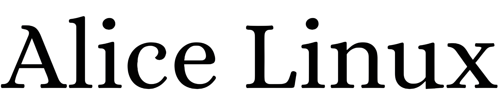

 Screenshot of AliceLinux running Sway, foot and pfetch. Showcasing the 95megabytes of memory footprint and running on QEMU platform PC-i440fx-9.0
Screenshot of AliceLinux running Sway, foot and pfetch. Showcasing the 95megabytes of memory footprint and running on QEMU platform PC-i440fx-9.0
Alice Linux is my personal daily driver minimal distro that used musl libc, busybox as main core utilities, package manager written in POSIX shell script, Wayland as the only gui server and trying to be minimal, lightweight and usable as possible.
Main keypoints: - no systemd - no PAM - no polkit - musl instead of glibc - libressl instead of openssl - LLVM & Clang instead of GCC and libgcc - busybox instead of coreutils/util-linux/etc - busybox's runit instead of systemd/openrc/etc - libudev-zero instead of udev/eudev - gettext-tiny instead of gettext - mandoc instead of man-db - doas instead of sudo - ... (more will come)
See release page for released rootfs.
See here for Alice live iso.
See docs directory for installation guide and other informations.
Come join and say Hi! in here: Telegram
Your cups of coffee very helpful for this project :D paypal | ko-fi | buymeacoffee